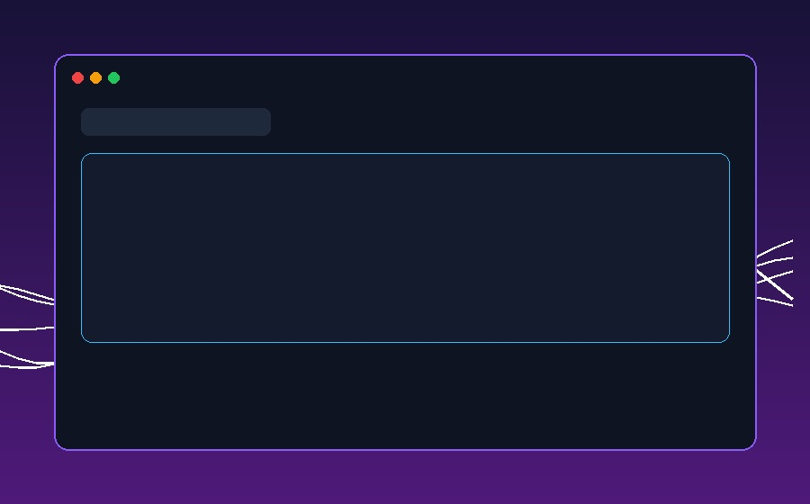
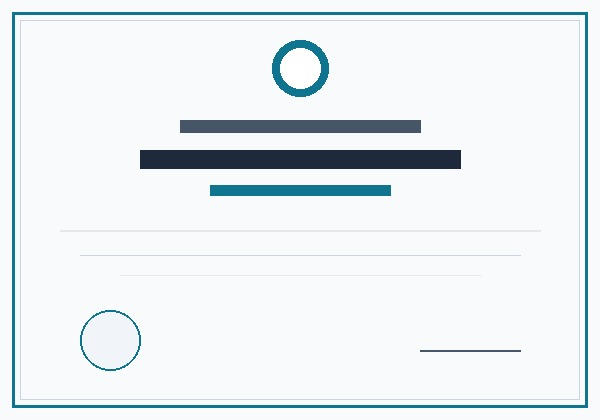
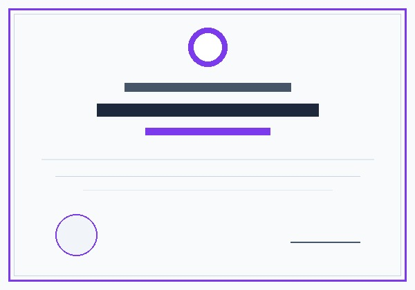

Hi, I am
{Thananjayan Aruljothy}
I am an AI Full-Stack Engineer specializing in building intelligent web applications powered by Large Language Models (LLMs), Generative AI, Python Flask, and modern cloud architectures.
About me
Practical AI application integration, Python/Flask backends, and cloud deployment.
Generative AI & LLM Integrations
OpenAI, Anthropic Claude, and Google Gemini API workflows; document Q&A, ElevenLabs TTS, and D-ID avatars.
Full-Stack & Cloud Deployment
Python/Flask REST APIs, Fabric.js interactive canvas, and AWS EC2 deployments with Gunicorn and Nginx.
Academic Background
Bachelor of Information Technology (BIT) — University of Colombo & BSc (Hons) in Transport and Logistics Management — University of Moratuwa.
Thananjayan Aruljothy is an AI-focused software engineer with over three years of professional experience at Flipick (April 2023 – August 2026), developing Python/Flask applications, REST APIs, and AI-powered content workflows.
His practical integration experience spans document question-answering, interactive video/course editing with Fabric.js canvas, PowerPoint narration automation, and video generation pipelines integrating OpenAI, Anthropic Claude, and Google Gemini.
He deploys and manages production applications on AWS EC2 with Gunicorn and Nginx across Linux/Ubuntu and Windows environments. Prior to software engineering, he spent 3.5 years as a Logistics Officer at INSEE Cement coordinating high-volume fleet transport and SAP operations.
My Skills
A comprehensive technical stack spanning frontier AI, cloud computing, and full-stack software architecture.
Core backend language for architecting REST APIs, AI microservices, data processing pipelines, and web applications.
Click any node on the neural circuit to explore proficiency & use cases.
Projects
Verified development responsibilities across interactive canvas editors, narration automation, and video pipelines.
Interactive Video Editor & Course Authoring
Fabric.js canvas authoring with editable slide objects, JSON persistence, ElevenLabs/Google TTS narration, and D-ID avatars.
AI-Assisted PowerPoint Narration & Automation
PPTX text extraction, OpenAI narration scripting, audio synthesis, animation duration synchronization, and human review.
AI Video Generation Platform
Transforming user briefs into scene & character assets, integrating Google Gemini & Veo 3 short clips with in-app editing.
Document Question-Answering & RAG System
Document ingestion (PDF/PPT), text chunking, vector embeddings, and LLM-based answer generation with citation grounding.

Interactive Video Editor & Course Authoring
Contributed to an interactive course-authoring platform at Flipick using Fabric.js. Built canvas workflows for adding/editing objects, saved slide layouts as JSON, integrated Google TTS and ElevenLabs for narration generation, and synchronized D-ID avatar video playback with canvas animations and LMS-compatible exports.
Credentials & Platform Practice
Verified Salesforce Trailhead Superbadges and practical hands-on platform milestones.

Multi-Factor Authentication & Single Sign-On (SSO)
Superbadge unit credential verifying hands-on platform practice in user authentication policies, SSO configurations, and identity security.

Lightning Experience Reports & Dashboards
Specialist achievement in business analytics, summary/matrix reports, custom dashboard creation, and automated reporting filters.
Ask my bot
Powered by a knowledge-base RAG engine loaded with Thananjayan's resume, technical experience, and project archives.
Let start something greet together
Have an exciting AI project, LLM application, or full-stack opportunity in mind? Let's build something exceptional.